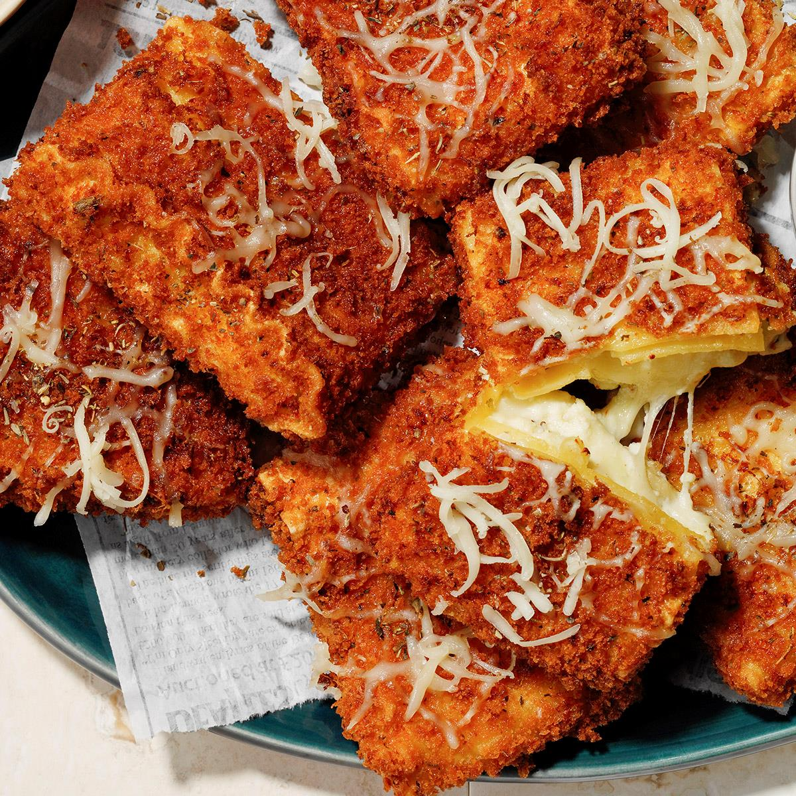

Fried Lasagna
This breaded and deep fried lasagna is the best way to eat lasagna.

Fried Lasagna Recipe photo by Taste of Home
Ingredients
- 1 carton (32 ounces) whole-milk ricotta cheese
- 2-1/2 cups shredded Italian cheese blend, divided
- 2-1/2 cups shredded Italian cheese blend, divided
- 6 large eggs, beaten, divided use
- 4 teaspoons Italian seasoning, divided
- Oil for deep-fat frying
- 2-1/2 cups panko bread crumbs
- 1 jar (24 ounces) marinara sauce, warmed
- 1 jar (15 ounces) Alfredo sauce, warmed
Steps
- Cook lasagna noodles according to package directions for al dente. In a large bowl, combine ricotta, 1-1/4 cups Italian cheese blend, mozzarella, 2 eggs and 3 teaspoons Italian seasoning. Drain noodles. If desired, cut off ribboned edges (discard or save for another use). Spread about 1/4 cup filling on each noodle. Starting with a short side, fold each in thirds. Place all on a parchment-lined baking sheet, seam side down. Freeze just until firm, about 1 hour.
- In an electric skillet or deep fryer, heat oil to 375°. In a shallow bowl, mix bread crumbs, 2/3 cup Italian cheese blend and 1 teaspoon Italian seasoning. Place remaining 4 eggs in separate shallow bowl. Dip lasagna bundles into eggs, then into crumb mixture, patting to help coating adhere.
- Fry bundles in batches until golden brown, 8-10 minutes, turning once. Drain on paper towels. Serve with marinara, Alfredo, the remaining Italian cheese blend and, if desired, additional Italian seasoning.